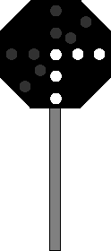

(2) Beschreibung Lichtsignal: Ein senkrechter Lichtstreifen, vom oberen Ende nach rechts abzweigend ein waagerechter Lichtstreifen. 
(3) Anwendung Das Signal bedeutet, die Rangierfahrt soll entgegen der Ablaufrichtung vom Ablaufberg wegfahren. ›